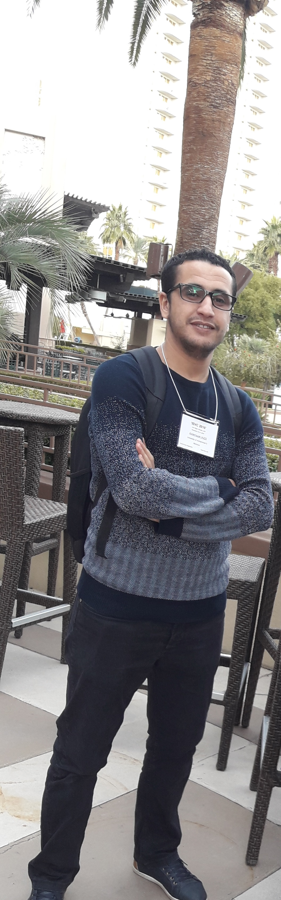

Abderrazak Iazzi
PhD in computer sciences
Computer Sciences and Telecommunications Laboratory Research (LRIT)
Rabat-IT-Center
Faculty of Sciences
4 Avenue Ibn Battouta
B.P. 1014 RP,
Mohammed V University
Rabat
Research interests
- Computer vision:
Problems of image and video processing.
- Video-surveillance:
Background subtraction, Feature extraction, object recognition, Human action recognition
- Natural Language Processing:
Arabic language, Amazigh language
- Machine learning:
theoretical machine learning, neural networks, evolutionary machine learning
- Application areas:
Healthcare, Medical image processing, Omnidirectional image, etc.
Research experience
- October 2021: PhD in Computer Science, LRIT, Mohammed V university in Rabat, Morocco
(Supervisor: Pr. Mohammed Rziza)
Citations
Publications
Journal papers
-
Said Iazzi, Abderrazak Iazzi, Saida Laaroussi, Abdellah Yousfi
"The Use of the Relational Concept in the Arabic Morphological Analysis", International Journal of Advanced Computer Science and Applications (IJACSA) , The Science and Information (SAI) Organization , 2021
-
Iazzi Aberrazak, Rziza Mohammed, Rachid Oulad HajThami.
"Fall Detection System Based Posture-Recognition for Indoor Environment", Journal of Imaging , MDPI , 2021
-
Iazzi Aberrazak, Rziza Mohammed, Rachid Oulad HajThami.
"Efficient fall activity recognition based on combining shape and motion feature", Computational Visual Media , Springer, 2020
-
Brahim Alibouch, Abderrazak Iazzi, Amina Radgui and Mohammed Rziza.
"An Adapted Block Thresholding Method for Omnidirectional Image Denoising", RJASET, 2014.
Conference papers
-
Iazzi Aberrazak, Rziza Mohammed, Rachid Oulad HajThami.
Human posture recognition based on projection histogram and Support Vector Machine .
ISIVC 2018, Rabat, Morocco.
-
Iazzi Aberrazak, Rziza Mohammed, Rachid Oulad HajThami.
"Fall detection based on posture analysis and support vector machine",
ATSIP 2018, Sousa, Tunis.
-
Iazzi Aberrazak, Rziza Mohammed, Rachid Oulad HajThami.
"A New Method for Fall Detection of Elderly Based on Human Shape and Motion Variation",
ISVC 2016, Las Vegas, Nevada, USA.
-
Iazzi Aberrazak, Rziza Mohammed, Rachid Oulad HajThami.
"An Adapted Block Thresholding Method for Omnidirectional Image Denoising",
AICCSA 2015, Marrakech, Morocco. (poster)
Teaching and supervision
Teaching assistant
-
Embedded system, Mobile Developement (Android system) (2019, 2020), HIGH TECH
-
Python programming (2018)
-
Network programming (Socket) (2017)
-
Networks (2015, 2017)
Supervision
I help supervising bachelor thesis in topic:
VOIP and networks.
Services to the community
Journal reviewer
Conference PC member
Grants & Awards
- October 2015: QCRI Scholarship to attend AICCSA 2015 in Marrakech, Morocco
- June 2014-June 2017: CNRST Scholarship as Phd Student
Memberships
Contact information
If you are interested in my research, feel free to send me an email at
abderrazak.iazzi@gmail.com
and I will be happy to answer you ASAP!